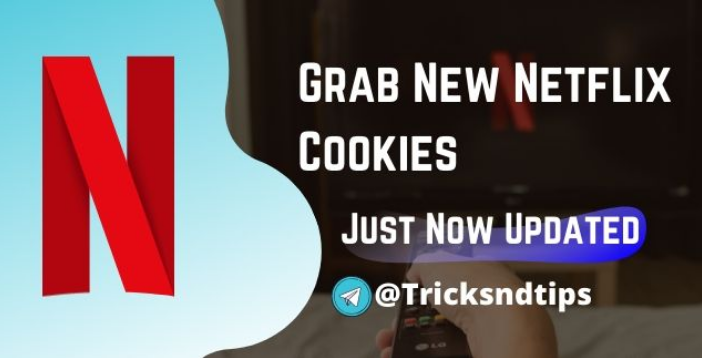
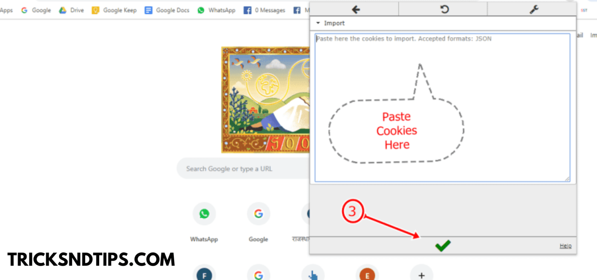

Home / Netflix /Netflix Cookies:Today Cookies
That Works [Hourly Updated] 2024
Netflix Cookies: Today’s Cookies That
Works [Hourly Updated] 2024
By The Professor • Last Updated 16-Dec-2024
( 5:47 am )

Join Trikndtips on telegram
Netflix is paid ott platform in which you can watch popular content on the web.
You know that Netflix is the most popular
application for entertainment. Today, Netflix has 139 million paying subscribers. Netflix, Inc.
is an American media service
provider based in Los Gatos, California, founded in 1997 by Reed Hastings
and Marc Randolph in Scotts Valley, California
If you are addicted to Netflix and really want to access
Netflix for free without username and password,
read this complete tutorial.
Because today you are learning a lot about Netflix and cookies.
So stay with us and keep reading.
If you want to get a free Netflix Accounts,
Netflix MOD APK and then check this article.
This is another way to use Netflix & Films.
Netflix Cookies
Let me explain more about Netflix. If you recall, between 5 and 6 years ago,
when there was no smartphone,
the main source of entertainment for young people was playing
on the playground or watching television,
but since the launch of smartphones, the scene has completely changed.
Now you will hardly find a teenager or an adult walking in the park or watching TV,
and the main reason is smartphones and smartphone app. With the help of an app like Netflix,
we now have everything in our hands.
Now we don’t have to sit in front of the TV waiting for our favorite
movie or series to arrive.
We can only open the Netflix app and find what we want to see there.
Read More: watch Tv Shows Online
Premium Netflix Cookies Today Updated 2022
Here are the ultimate boxes of Netflix cookies.
I have shared 10+ working premium Netflix
account cookies that updated hourly. Enjoy
What are Netflix Cookies?
NetflixCookies is a small data in a browser used by
every browser to remember your login and serve you good content.
Cookies have an expiry date when it gets expired.
Cookies get expired when you logout from the particular website.
After login out from website the website will not able to use to
same cookies to login you automatically in website.
In the same way, Netflix cookies also work.
You can log in to any accounts if you have working cookies.
You need to import working cookies in your browser through
the steps I have explained to you.
First of all, we need to know how the browser works.
When we visit any website, all cookies and browsing data cache
are saved in your browser. If you want to verify that,
go to the browser settings and open the cache cookies option,
you can see all your data that you browse.
Hope you can understand now. Now we export
those cookies in any browser using the
Editthiscookie extension and you can access
Netflix without logging out or username and password.
you can also get chegg account and free hulu account from this post .
i m sure you will love it .
How do Netflix cookies work?
Follow the steps given to learn how to use this cookie.
Complete all the steps correctly and enjoyNetflix for free. .
First, visit and copy the working cookies
from the Netflix cookie options n. ° 1 to n. ° 10 below.
After copying cookies, visit www.netflix.com in the new tab.
Stay on the Netflix home page and click on the Editthiscookie extension.
Now paste the copied cookies into Editthiscookie.
Now update the Netflix home page tab. You will be logged into Netflix.
If the above cookies are blocked, share this post on your Facebook timeline and the cookies will be unblocked. Follow these highlighted steps strictly:
After accessing Netflix through cookies, do not log out;
otherwise, cookies will be automatically destroyed and will not work
until an update.
Please do not change the language of the account.
Keep it default.
Lst item
Never try to change the account password; otherwise,
Admin will remove you, and I will stop sharing cookies.
Never try to change or register your own mobile phone
number and email ID.
Don’t bother with the provided Netflix account.
Cookies for Netflix Hourly Updated
Here are a few more Netflix accounts. If the above cookies do not work,
please try these given cookies. All of these accounts are working and recently tested.
If any account isn’t working or isn’t showing,
please leave a comment below.
I will update you as soon as possible.
How to Use Netflix Cookies ( PC )
Time needed: 5 minutes.
So, guys, I’ve shared over 20 Premium account cookies.
And you have a lot of account cookies, but you don’t know how to use them.
So now is the time to learn how to access Netflix using
those cookies, so follow these steps:
-
Up Chrome or Any Other Browser
First of all, open Chrome or Opera browser and add an extension
named Editthiscoookie. Search and download from the Chrome web
store and receive a direct link. EditThisCookie for Chrome EditThisCookie for Opera
-
Install Edit this Cookies
After installing EditThisCookie extension you can now import cookies in your browser.
Then click on the EditThisCookie icon and then click
on the Import icon and follow the given picture

-
Final Step for Using Cookies
Now open Netflix.com in the same tab. You can see that you are logged in to
Netflix without a username and password.If any cookie doesn’t work, try another cookie
and if none works, leave a comment. I will update cookies at the same time.
Conclusion
I hope you access Netflix for free and enjoy it. If you are really impressed
with our work, share this post on social media and with your friends.
If cookies don’t work and you have any questions about Netflix cookies,
ask in the comment box.
This post is about Netflix cookies. Here you will receive daily new
updated working cookies. And don’t forget to subscribe to this website
to receive more daily updates. Thank you!
 Join Tricksndtips on telegram
Join Tricksndtips on telegram